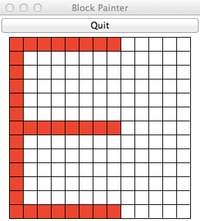

The due date for this homework is Thursday, February 24, 5:00pm.
This homework will improve your skills with for loops (with range) and if statements by having you develop programs that use loops and conditionals to repeat code patterns that are similar but not exactly the same. Specifically, this assignment is designed to give you practice with the following topics:
for loops over integers with rangeAs usual, we encourage you to start early.
Your task is to complete following steps:
hw3_letters.py, block_paint.py, hw3_letters.py, and hw3tester.py, in either the unzipped folder or the Repl project. You are expected to write your programs in these files.hw3_letters.py. This file is used in Part 1.hw3_location.py. This file is used in Part 2.hw3_letters.py.hw3_location.py.Notice that each starter .py file has a header with some information for you to fill in. Please do so. Your feedback helps the instructors better understand your experiences doing the homeworks and where we can provide better assistance.
For the first problem for this homework, you will use a Python module called block_paint and write code to implement four letters of a scalable retro font, like the ones used in 1980’s-era digital watches (and celebrated in minecraft). This module is included in the homework 3 zip file.
Your program should do the following:
Here are a couple examples to show the prompts that the test program (described below) expects, and to show invalid input. In the following example, an invalid scale is entered (>= 3, but not odd). Notice that because the scale is invalid the program does not ask for the letter to draw:
Enter scale: 8
8 is an invalid scale.In the following example, the scale is okay but the letter is not valid:
Enter scale: 3
Enter letter: q
I can't draw a qIf the scale and letter are both valid, your program should not print anything else (it should just draw the appropriate letter).
block_paint moduleWe have provided the block_paint module for drawing the retro font letters. To create a window for drawing a letter, you should call the new_grid function in the block_paint module. This function takes one parameter, which is the scale (width and height) of the window, in blocks, and returns a BlockPaint object that can be used for “painting” the blocks in a window. There are two useful methods available for this object:
paint(x, y, color). This method takes the coordinates and color of a block to be painted. Coordinates start at (0,0) at the lower-left of a window, and extend to (scale-1,scale-1) at the upper right. The color you specify can be a string like red', 'orange', 'blue', or 'green'. Other standard colors should work, too.
end(). Once you are done painting the blocks for a letter, you must call the end() method. Your program will “hang” and not work properly if you do not call this function.
A short example of using the block_paint module appears at the top of the hw3_letters.py template file, and is also shown below. Before attempting to write code to draw the letters, try to run the hw3_letters.py program. Your hw3_letters.py file must be located in the same folder (directory) as the block_paint.py file in order for your code to run correctly. This should “automatically” happen because of both files being contained inside the .zip file you downloaded for this homework, but please ensure that that is the case.
The example code that appears at the top of hw3_letters.py is designed to draw two parallel vertical lines on the edges of a grid, one blue and one red:
import block_paint
# set an arbitrary scale; you should ask the user for the scale
scale = 13
# make a new window to draw in
window = block_paint.new_grid(scale)
# draw two vertical lines
for i in range(scale):
window.paint(0, i, 'red')
window.paint(scale-1, i, 'blue')
# all done drawing
window.end()Guidelines and hints for drawing the letters are given below, as well as example images of the letters you will need to draw, at two different scales. Important detail: with each letter there is a constraint on the number of for loops you are allowed to use. For full credit, you must abide by these constraints.
E: The letter E should be anchored at the left side of the window, with the width of the letter extending to 2/3 the width of the window. For example, if the scale is 7, the width of the E should be 7*2/3=4. As another example, if the scale is 13, the width of the E should be 13*2/3=8. You should have no more than 2 for loops in your code to draw the E.
| Letter E at scale 7 | Letter E at scale 13 |
|
 |
N: The letter N should extend to the corners of the window. You should have no more than 1 for loop in your code to draw the N.
| Letter N at scale 7 | Letter N at scale 13 |
 |
 |
Y: The letter Y should extend to the corners of the window. The two angled “struts” at the top of the Y should start at the row above the middle row and extend to the top corners. You should have no more than 2 for loops in your code to draw the Y.
| Letter Y at scale 7 | Letter Y at scale 13 |
 |
 |
Lastly, note that if you attempt to draw in a location that is beyond the extent of the window, your program will crash. The crash message will include the line number of your code and the specific coordinate value that caused the problem. In the example trace below, an attempt was made to draw using X coordinate 14 (at line 52 in the program example_error.py), which was beyond the edge of the window:
Traceback (most recent call last):
File "example_error.py", line 52, in <module>
window.paint(i+1, size/2+i, 'red')
File "block_paint.py", line 64, in paint
raise InvalidXValue("X dimension {} is invalid".format(x))
block_paint.InvalidXValue: X dimension 14 is invalidAbbreviated names for locations on campus—such as Frank, COVE, Case, and TIA—are part of the Colgate vernacular. Some are simply the first word of a location: e.g., “Frank” stands for Frank Dining Hall. Others are acronyms derived from the first letter of each major word in the location name: e.g., “COVE” stands for the Center for Outreach, Volunteerism, and Education
Although there is no specific set of rules for how location names are abbreviated, it is often the Case (pun intended) that: * An acronym is used for locations which include words starting with vowels—e.g., Thought Into Action is referred to as “TIA”, not “Thought” * The first word is used for locations whose acronym only contains consonants—e.g., Case-Geyer Library is referred to as “Case”, not “CGL”
In the file hw3_location.py you will write a program that takes the full name of a location and outputs the most likely abbreviation and the alternative abbreviation for that location. The acronym for a location should consist of all uppercase letters in the location name, while the first word should consist of all letters appearing before the first non-letter character.
Think about how to break down the problem into manageable parts so as to implement and test one at the time. You should build your program incrementally.
You must use an accumulator pattern to solve this problem and create the abbreviation string. You may NOT use string methods (which have not been covered in class yet) and you may NOT use regular expressions (the re module) or other methods that have not been discussed in class.
Hint: you can import the string module in Python and check whether a given character is contained within pre-defined strings of all letters (string.ascii_letters) or all uppercase letters (string.ascii_uppercase). See the string module documentation for more information.
Here are several examples. Your program’s output should look exactly like the examples provided below (the hw3tester.py program looks for output matching the following).
Enter a location: Outdoor Education
Most likely: OE
Alternative: OutdoorEnter a location: Ho Science Center
Most likely: Ho
Alternative: HSCEnter a location: African, Latin, Asian, and Native American cultural center
Most likely: ALANA
Alternative: AfricanEnter a location: Pinchin Hall
Most likely: Pinchin
Alternative: PHYour program should apply the aforementioned observation, even if the alternative abbreviation or neither abbreviation is used in the Colgate vernacular. For example:
Enter a location: Dana Arts Center
Most likely: DAC
Alternative: DanaEnter a location: James B. Colgate Hall
Most likely: James
Alternative: JBCHThere are two separate files that can be used to test the two programs for this homework.
There are some tests embedded in the block_paint.py module itself that you can use to help verify the correctness of the block letters program (part 1). As with other tests provided for you, please note that the test program is NOT a complete test. You will still need to take responsibility for thoroughly testing your code before submitting.
There are tests in hw3tester.py for the hw3_location.py program. Again, please note that the tests in this file are NOT comprehensive. You will still need to take responsibility for thoroughly testing your code before submitting. However, our hope is that this test program will at least catch minor errors and make it easier for our grading process and more likely for you to receive full credit.
Please note:
The test programs are extremely picky about spacing in the output (from print statements) your program produces. If it reports an error, it might just be the difference of a single space.
The test programs are NOT a complete test. You will still need to take responsibility for thoroughly testing your code before submitting. However, our hope is that this test program will at least catch minor errors and make it easier for our grading process and more likely for you to receive full credit.
To use the test programs in IDLE, follow these steps:
Find the block_paint.py or hw3tester.py program that is inside the zip file for this homework. Make sure that this file is in exactly the same folder as the four homework files containing your programs for this assignment.
Make sure your homework files are named exactly as described in assignment. This should happen automatically when you decompress the zip file.
Open block_paint.py or hw3tester.py in IDLE and select “Run” -> “Run module”
Read the test messages that are printed and revise your work accordingly. If the output of your program does not precisely match the expected output, a test will fail and an error message will print.
To use the test program in Replit, follow these steps:
Click on the Shell tab on the right side of the screen that is next to Console if it is not already selected. You should see a prompt with ~/Homework03$
Type python block_paint.py or python hw3tester.py after the prompt.
Press the Enter key to run the test program.
Read the test messages that are printed and revise your work accordingly. If the output of your program does not precisely match the expected output, a test will fail and an error message will print.
We hope you find this helpful!
Please upload two Python files:
hw3_letters.pyhw3_location.pyPlease also remember to complete the questions at the top of the hw3_letters.py and hw3_location.py files.
Your assignment will be graded on two criteria:
for loops for the block letter program. [80%]The correctness part of your grade is broken down as follows:
| Category | Portion of grade |
|---|---|
Letters E, N, Y are drawn correctly (hw3_letters.py) using the specified number of for loops |
40% |
Locations are correctly abbreviated (hw3_location.py) |
40% |
Program design and style [20%]: style and program design become increasingly important the more complex your program becomes. For these programs, adhere to the following guidelines:
Variable names should be meaningful
Programs should contain at least a few descriptive comments. Do not comment every line of code with low level explanations of what each line does. Focus on high level ideas.
The if statements should be structured so that the logic is clear and easy to follow.
Create additional letters! You can decide how they should look in their blocky-ness. In particular, try A, K, M and any others you think will be interesting. Try to minimize the number of for loops in your solutions.